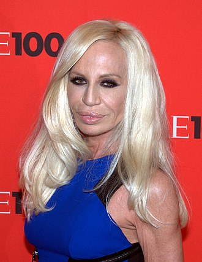

TOP 3 FASHION DESIGNERS
To fashion design ειναι η τέχνη των ρούχων, που μέσω αυτής ο καθε καλητέχνης εκφράζει τα συναισθήμαατα, των χαρακτήρα αλλα και την φαντασία του. Σχεδιάζοντας ρούχα είτε υψηλής ραπτικής είτε οχι το κάθε ενα εχει την δική του τέχνη και την δική του διμιουργική χάρη.


Η Κοκό Σανέλ είχε ελάχιστη υπομονή και πολύ ταλέντο. Δεν θα μπορούσε να καταφέρει τίποτα λιγότερο. Η Κοκό Σανέλ ήταν πρωτοποριακή σχεδιάστρια μόδας. Η μοντέρνα και νεωτεριστική φιλοσοφία της, οι εμπνευσμένες γυναικείες μόδες -από τις αντρικές- και η αναζήτηση της πολυτελούς απλότητας, την έκαναν αναμφισβήτητα τη σημαντικότερη φιγούρα στην ιστορία της μόδας του 20ού αιώνα. Η επιρροή της στην υψηλή ραπτική ήταν τόση, που ήταν το μόνο πρόσωπο στον τομέα της που αναφερόταν στο περιοδικό TIME ανάμεσα στους 100 ανθρώπους με τη μεγαλύτερη επιρροή στον 20ό αιώνα.

Η καριέρα του Κριστιαν Ντιορ άρχισε την δεκαετία του 1930 όταν αποφάσισε μετά από παρότρυνση του φίλου του Jean Ozenne να πουλήσει σχέδιά του σε διάφορους οίκους μόδας υψηλής ραπτικής. Κάποια από τα σχέδια του αγοράστηκαν και από την γνωστή κατασκευάστρια καπέλων Agnes. Εκείνη την εποχή γνωρίζεται και με τον Robert Piguet όπου αγοράζει μερικά σχέδιά του και κάποια δημοσιεύονται στην εφημερίδα Le Figaro.

Ο οίκος μόδας Versace είναι εταιρεία υψηλής ραπτικής και ένδυσης με έδρα το Μιλάνο, που ιδρύθηκε την 1 Μαρτίου του 1978 από τον στυλίστα Τζιάνι Βερσάτσε και μετά τον θάνατό του πέρασε στα χέρια της οικογένειάς του: στον αδερφό του Σάντο Βερσάτσε και την αδερφή του Ντονατέλα Βερσάτσε ενώ η κόρη της, Αλέγκρα Βερσάτσε Μπεκ, έγινε ελέγχων μέτοχος έχοντας κληρονομήσει το μερίδιο του θείου της Τζιάνι.